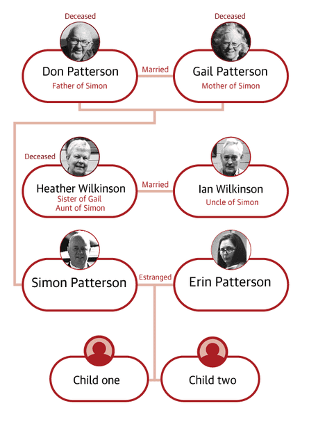
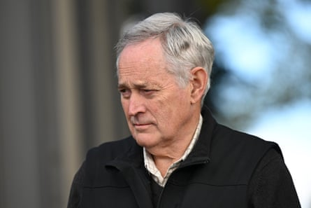
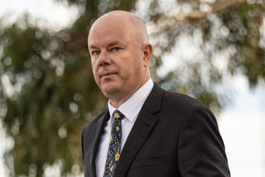
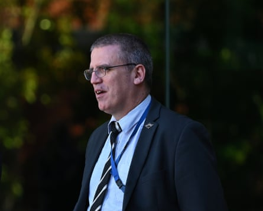

The triple murder trial of Australia’s mushroom lunch cook has attracted worldwide fascination and intense media attention for months.
After seven days of deliberations, a supreme court jury found Erin Patterson , 50, guilty of murdering her parents-in-law, Don and Gail Patterson, and Gail’s sister, Heather Wilkinson, with poisoned beef wellingtons she served for lunch at her home in Leongatha, Victoria. She was also found guilty of attempting to murder the fourth lunch guest, Heather’s husband, Ian Wilkinson.
Patterson had pleaded not guilty to all charges. Here’s how the trial unfolded.
Illustration: Guardian Design
1. Erin Patterson tells her side of the story
For five weeks, Patterson quietly observed her murder trial from the courtroom dock. On day 24 of the trial, Patterson began to tell her side of events at a lunch she prepared for four elderly relatives. During days in the witness box, Patterson’s raw and emotional evidence detailed her “never-ending battle with low self-esteem” , plans for weight loss surgery and struggles with an eating disorder.
Questions from her defence lawyer, Colin Mandy SC, about her interest in wild mushrooms, elicited her history of foraging that began after observing mushrooms in the Korumburra botanic gardens during walks with her children in 2020, during the Covid pandemic.
Patterson admitted she had never been diagnosed with ovarian cancer despite telling her lunch guests she may need treatment for this. Questioned about messaging her Facebook friends “this family I swear to fucking god” in relation to her in-laws, Don and Gail, Patterson said she now felt “ashamed”.
Under cross-examination by prosecutor Nannette Rogers SC, Patterson denied deliberately lacing the beef wellingtons with death cap mushrooms but accepted the toxic fungi were in the dish she served on 29 July 2023.
Patterson said she lied to police about dehydrating mushrooms because she was afraid she would be held responsible . She said on 1 August 2023 – three days after the lunch – she realised foraged mushrooms may have been in a container with store-bought dried mushrooms used in the beef wellingtons . Patterson said the realisation came after her estranged husband, Simon asked her: “Is that how you poisoned my parents, using that dehydrator?” while she was in Monash hospital days after the lunch.
She agreed she did not tell anyone about her realisation.
In Patterson’s final moments in the witness box, prosecutor Nanette Rogers made three suggestions to the accused. That she deliberately sourced death cap mushrooms in 2023, deliberately included them in beef wellingtons she served and did so intending to kill her guests.
“Disagree,” Patterson said to each.
2. Testimony from sole lunch survivor
Ian Wilkinson entered the witness box on day six and began to tell the jury about a family lunch held on a winter’s day in July 2023. Recalling the lunch invitation, Ian said he and Heather were “very happy” to be invited to Patterson’s house less than a fortnight before the meal. Ian had never been for a meal at Patterson’s Leongatha home and no reason was given for the invitation. “It seemed like maybe our relationship with Erin was going to improve,” he said.
Ian Wilkinson leaves the Latrobe Valley magistrates court in Morwell, Victoria. The court heard that he and his wife, Heather, fell sick the evening of the lunch.Photograph: James Ross/AAP
Inside Patterson’s home, Ian recalled her plating the individual beef wellingtons on four large grey plates and a smaller plate – an “orangey, tan” colour. Patterson, he said, ate from the odd plate. Patterson and her guests tucked into their meals – each allocated a single beef wellington – which looked like a pasty – with a side of mashed potatoes and green beans, Ian said. After the group had finished eating, Patterson “announced that she had cancer”, Ian said. “In that moment, I thought, ‘This is the reason we’ve been invited to lunch’,” he said. Ian and Heather fell sick the evening of the lunch, the court heard.
3. Simon Patterson
On day three of the trial, the prosecution called their first witness – Patterson’s estranged husband, Simon. He detailed the couple’s multiple separations before a final separation in 2015.
Simon Patterson, Erin Patterson’s estranged husband, arrives at the court in Morwell in May.Photograph: Diego Fedele/EPA
Simon said despite being separated, the couple had a strong friendship – often holidaying together overseas with their children – until a dispute over child support in late 2022, when his accountant listed him as “separated” on his tax return . After this, the “chatty” nature of their digital correspondence ended. “It became functional,” Simon told the court.
During Simon’s evidence, the court was shown text messages between the pair in the lead-up to the lunch. The day before, Simon texted Patterson to say he felt “too uncomfortable” to attend . In Patterson’s reply, she said the news was “really disappointing” and that she had “spent a small fortune on beef eye fillet” for the meal. Under cross-examination, Simon denied saying to Patterson “is that what you used to poison them?” in relation to her food dehydrator, while she was at Monash hospital in the days after the lunch.
4. Patterson’s children testify
Video testimony from Patterson’s two children, who cannot be named due to a suppression order, was played to the jury. The pre-recorded evidence, which the siblings gave separately to police on 16 August 2023, showed each child being interviewed by police officers. In the video, Patterson’s children recalled eating leftovers of her beef wellington lunch a day after the fateful lunch. Her daughter described her mother as a “very good cook” .
Patterson’s 14-year-old son recalled the meal he and his sister ate on 30 July 2023 was eye-fillet beef – “some of the best meat I’ve ever had”. He described his parent’s relationship as “very negative” and told police his father “does a lot of things to try and hurt” his mother.
Patterson’s children said they they did not know their mother to forage for mushrooms, the court heard. Patterson’s son recalled his mother seeing a mushroom at Korumburra botanic gardens in 2020 during a walk. He said his mother took a picture of them because she “thought they looked nice”.
5. Inside the police investigation
The prosecution’s final witness, Det Leading Sen Const Stephen Eppingstall, the officer in charge of the investigation, began testifying on day 20. He described the evidence police gathered as they investigated the poisonings.
Det Leading Sen Const Stephen Eppingstall led the investigation into the fatal mushroom lunch.Photograph: James Ross/AAP
Eppingstall told the jury police probed Patterson’s phone records, bank statements, Woolworths purchase history, medical records and electronic devices seized from her Leongatha home a week after the lunch. Electronic records from a Cooler Master computer found at Patterson’s house indicated it had been used to visit webpages listing sightings of death cap mushrooms in May 2022.
During Eppingstall’s evidence, Patterson’s formal police interview from 5 August 2023 was played to the court . In the footage, Patterson told detectives she did not own a food dehydrator, despite them finding a manual for one in her house hours earlier.